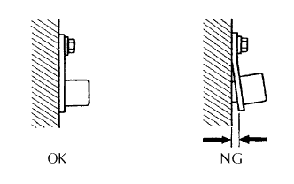

DTC P0340/12 Hư hỏng mạch cảm biến vị trí trục cam |
DTC P0341/12 Tính năng / Phạm vi hoạt động của mạch "A" cảm biến vị trí trục cam (Thân máy 1 hay Cảm biến đơn) |
| Số mã DTC | Điều kiện phát hiện DTC | Khu vực nghi ngờ |
| P0340/12 |
|
|
| P0341/12 | Khi trục khuỷu quay 2 vòng, tín hiệu cảm biến vị trí trục cam nhập vào ECM 12 lần hay hơn (thuật toán phát hiện 1 hành trình) |
|
| 1.KIỂM TRA CẢM BIẾN VỊ TRÍ TRỤC CAM (ĐIỆN TRỞ) |
Ngắt giắc nối C1 của cảm biến
Đo điện trở giữa của cảm biến.
| Nối dụng cụ đo | Điều kiện tiêu chuẩn | Điều kiện tiêu chuẩn |
| 1 - 2 | Lạnh | 835 đến 1,400 Ω |
| 1 - 2 | Nóng | 1,060 đến 1,645 Ω |
|
| ||||
| OK | |
| 2.KIỂM TRA DÂY ĐIỆN (CẢM BIẾN VỊ TRÍ TRỤC CAM - ECM) |
Ngắt giắc nối C1 của cảm biến
Ngắt giắc nối E12 của ECM.
Đo điện trở của các giắc nối phía dây điện.
| Nối dụng cụ đo | Điều kiện tiêu chuẩn |
| C1-1 - E12-26 (G2) | Dưới 1 Ω |
| C1-2 - E12-34 (NE-) | Dưới 1 Ω |
| C1-1 hay E12-26 (G2) - Mát thân xe | 10 kΩ trở lên |
| C1-2 hay E12-34 (NE-) - Mát thân xe | 10 kΩ trở lên |
|
| ||||
| OK | |
| 3.KIỂM TRA CẢM BIẾN VỊ TRÍ TRỤC CAM (SỰ LẮP RÁP) |
|  |
Kiểm tra rằng cảm biến đã được lắp chính xác.
|
| ||||
| OK | |
| 4.KIỂM TRA TRỤC CAM |
Kiểm tra rằng răng của trục cam không có bất kỳ vết nứt hay biến dạng nào.
|
| ||||
| OK | ||
| ||